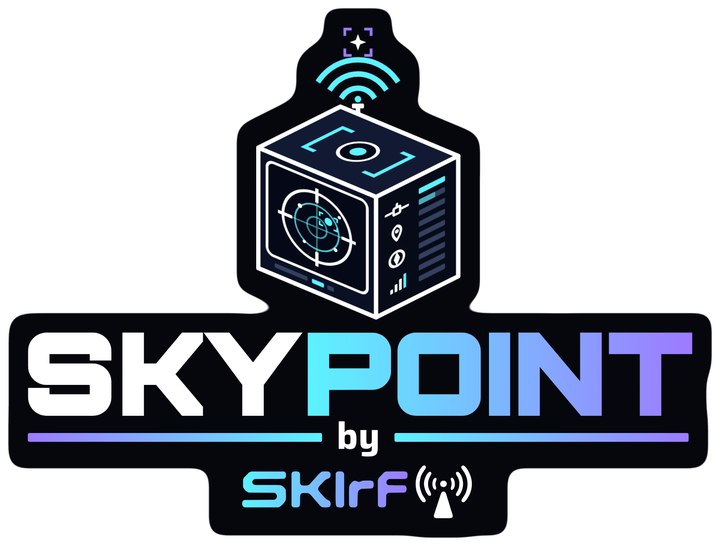
Hold your watch up to the sky and it shows what's behind it: stars, constellations, planets, the Moon in its real phase, deep-sky objects, and the ISS on its way over. Now on Android phones too.
1.0 BETA 1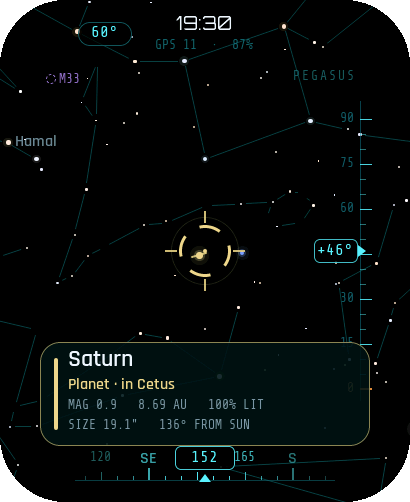
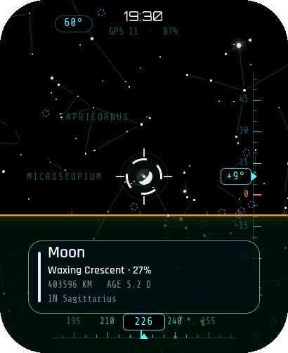
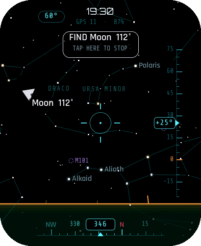
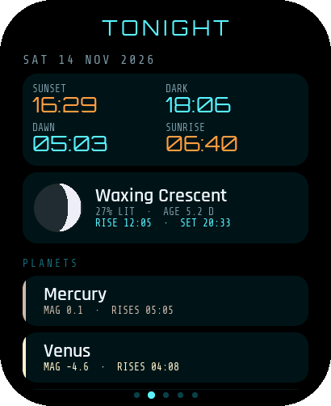
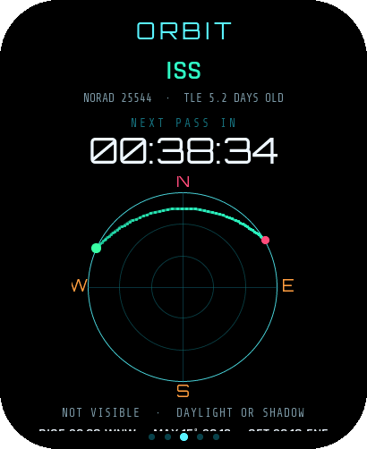
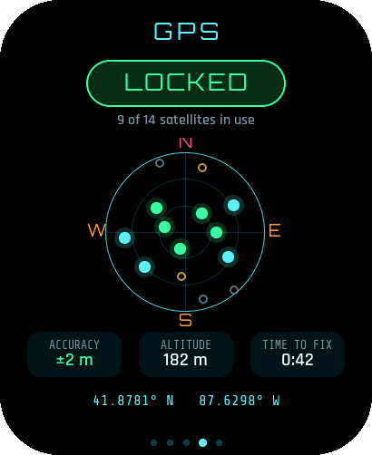
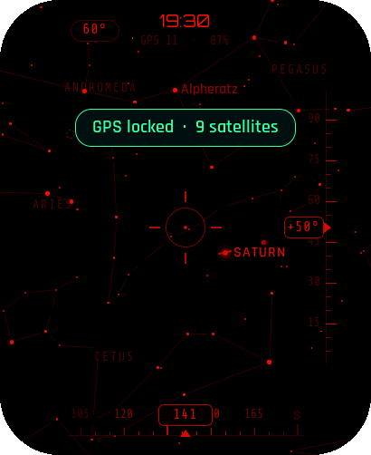
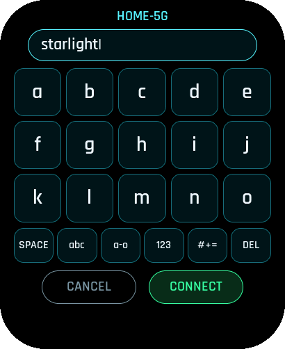
INSTALLPLUG IN, CLICK, DONE. CHROME OR EDGE ON A COMPUTER.
LilyGO T-Watch Ultra
- BHI260AP on-chip motion fusion
- GPS sets the time and position, with its own GPS page
- Vibration, sounds, and Launcher support
Using Launcher? Don't use Install, because it replaces Launcher. Download the app .bin, copy it to the SD card, and install it from Launcher.
Waveshare C6 AMOLED 2.06
- QMI8658 with motion fusion in the firmware
- Time and place come from a Wi-Fi sync, or pick a city
- ES8311 speaker sounds, runs standalone
First install or switching from another app? Tick Erase device when the installer asks. If it won't connect, hold BOOT while you plug in the cable.
ANDROIDTHE SAME SKY ON YOUR PHONE. NO WATCH NEEDED.
SkyPoint for Android
- Phone compass + gyro, true north corrected for your location
- AR camera view, pinch to zoom, tap anything to find it
- Tonight, ISS / Tiangong / Hubble passes, GPS sky plot, sounds
- Tap the card for an info sheet: rise and set times, distance, colour, orbit data, and the Wikipedia summary
- Constellation art (optional layer): drawings of the dippers, the zodiac, Orion and other famous figures over their stars
- Layers to show just stars, planets, satellites or deep sky, and portrait, auto or landscape rotation
- Open this page on your phone and tap Download APK.
- Open the download. If asked, allow your browser to install unknown apps.
- Play Protect may warn that it doesn't know the app. Tap More details › Install anyway.
- Allow location (and camera if you want AR). Wave the phone in a figure-8 once to wake the compass.
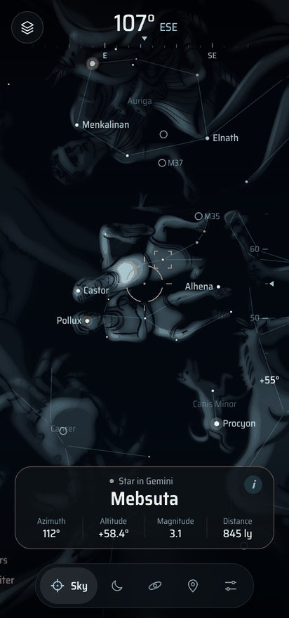
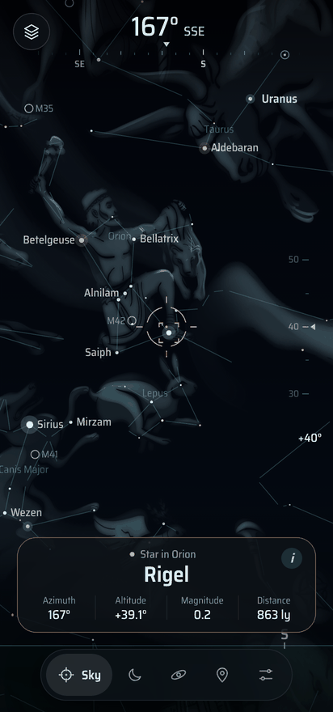
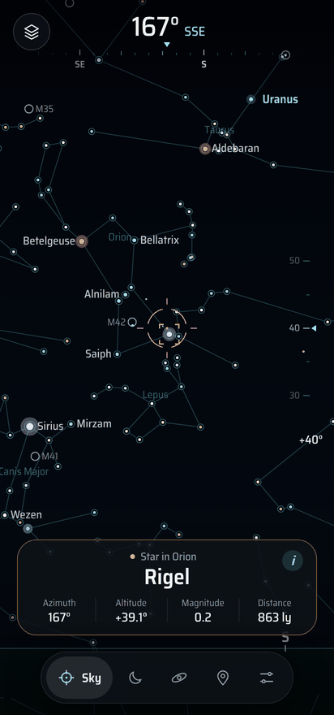
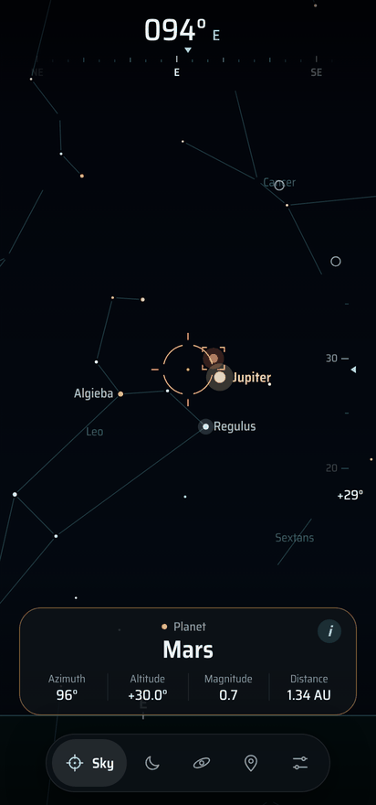
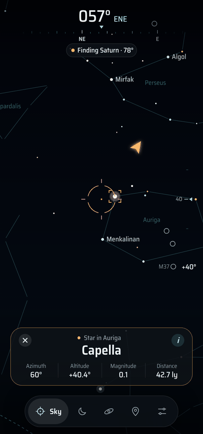
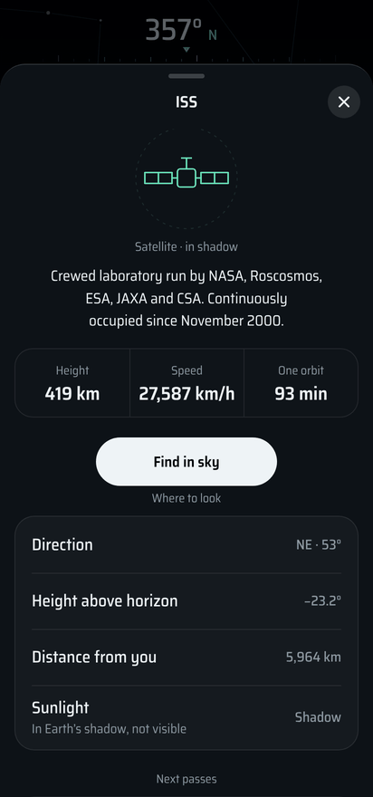
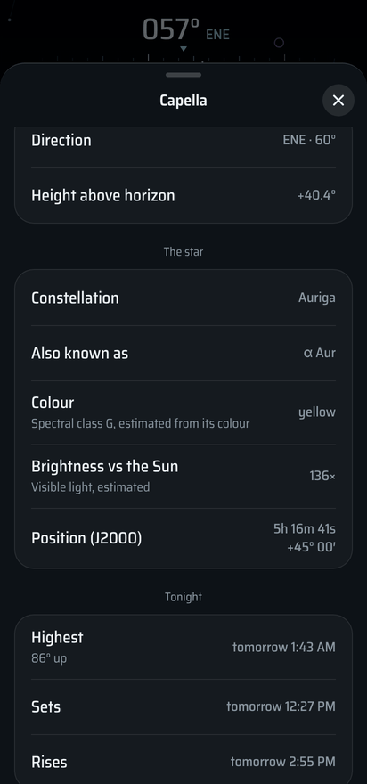
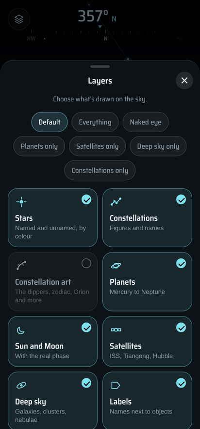
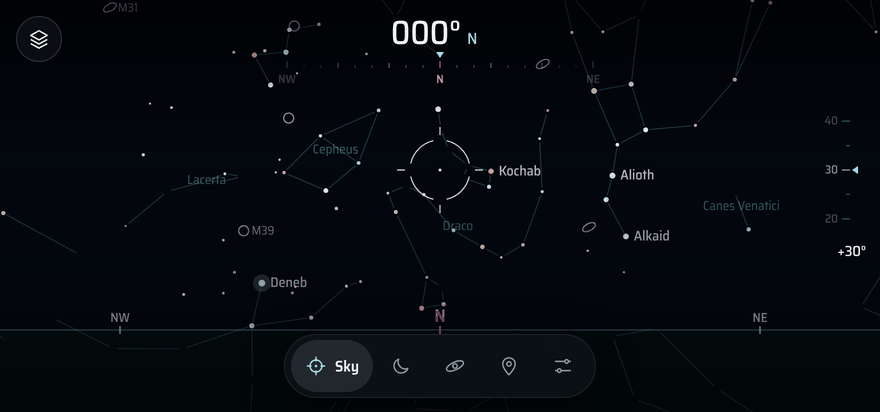
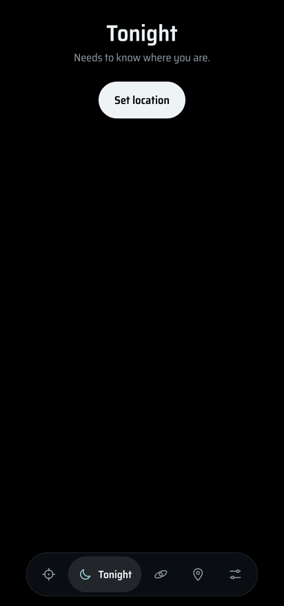
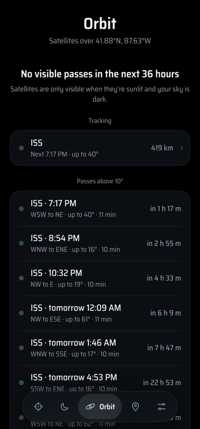
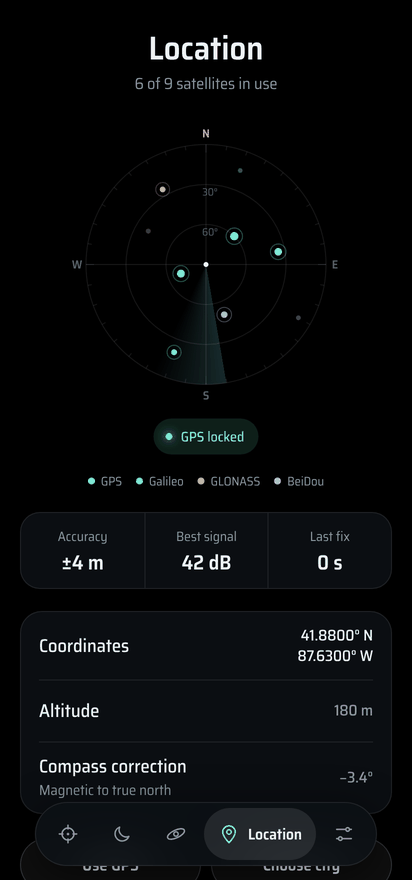
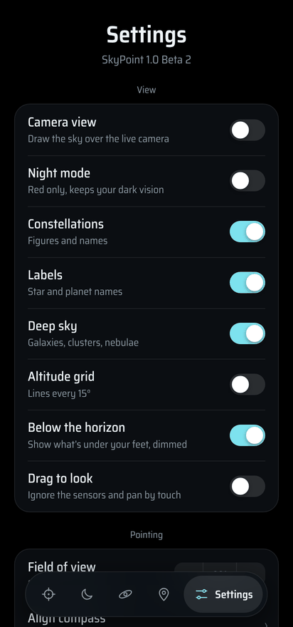
FIRST NIGHT OUTFOUR STEPS TO A WORKING SKY
Get time and place. On the T-Watch, go outside until the GPS page says LOCKED. On the C6, use SETUP › Wi-Fi, then Sync over Wi-Fi (or pick a city).
Align north. The watch knows which way is down but not which way is north. Long-press the sky, pick the Moon or a bright planet, centre it, and long-press again.
Look through it. Hold the watch up like a window. Tap to zoom (90° to 20°). Aim at something and the reticle locks onto it with a card of details.
Hunt. Swipe to TONIGHT or ORBIT and tap anything to start Find mode. An arrow and rising tones guide you to it.
HELPIF SOMETHING'S OFF
The sky turns the wrong way
Step SETUP › Sensor axis through 0 / 90 / 180 / 270° until moving the watch moves the sky correctly, then align north again.
Positions are off to one side
That's the heading. Re-align on something real: when the reticle is locked onto it and you're centred, long-press. The gyro drifts slowly, so re-aligning every half hour or so keeps it tight.
ISS times look wrong
Orbital elements go stale after about a week. The ORBIT page shows their age. Tap UPDATE (it needs Wi-Fi set up in SETUP).
Android: the sky is off to one side or jumps around
Phone compasses get pulled by cases with magnets, cars and steel. Wave the phone in a figure-8, then SETUP › Align compass: pick the Moon or a bright planet, centre it, tap LOCK IT. The yellow CALIBRATE chip shows when Android thinks the compass is unsure.
Android: "App not installed"
An older SkyPoint signed with a different key is in the way. Uninstall it first, then install again. Updates from this page install over each other.
Flash from the command line instead
esptool --chip esp32s3 write-flash 0x0 SkyPoint_TWatchUltra_Beta_1.bin esptool --chip esp32c6 write-flash 0x0 SkyPoint_WaveshareC6_AMOLED206_Beta_1.bin
The C6 image is built for its 4 MB flash. Run esptool --chip esp32c6 erase-flash first if the board had something else on it.
Checksums (SHA-256)
| Loading… |